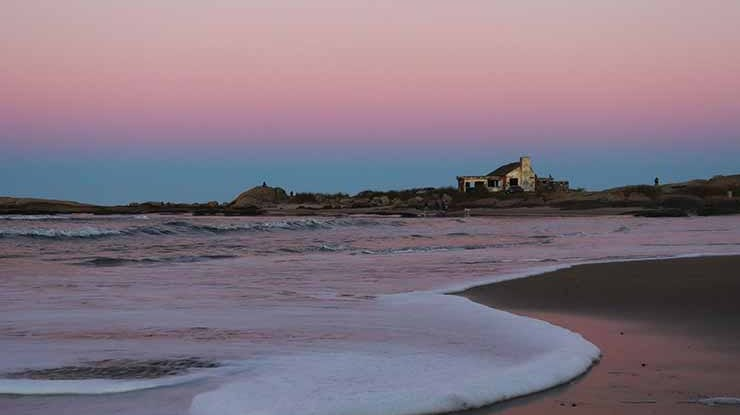

Punta del Diablo é uma pequena cidade de pescadores e balneário na costa leste do Uruguai. A Praia dos Pescadores, no centro, é pontilhada de barcos de pesca e apresenta o monumento branco De Artigas
Com ótimas perfeitas para a prática de surfe e banhos de sol, além de incríveis opções de atividades ao ar livre, esta antiga e pacata aldeia de pescadores é hoje em dia uma das estâncias costeiras do Uruguai preferida pelos mochileiros. Reduto de boêmios, surfistas e mochileiros, Punta del Diablo é uma cidade de praia descontraída na costa nordeste do Uruguai. No entanto, por muitos anos, a cidade era um tranquilo e pacato porto de pesca. Hoje em dia, as pessoas vêm ao local para desfrutar de maravilhosas praias, ondas perfeitas para a prática de surfe e ótimos restaurantes de frutos do mar ou para se aventurar pelas trilhas do parque nacional nas proximidades. Com várias estradas de areia que atravessa a aldeia até as praias, a cidade de Punta del Diablo é pequena o suficiente para ser percorrida a pé. Junte-se aos banhistas na Playa del Rivero, uma surpreendente baía protegida, conhecida por suas ondas, bares na beira da praia e incríveis pores-do-sol. Divirta-se com o público mais jovem na Playa de la Viuda, uma praia atraente, com ondas radicais, circundada por casas elegantes.
Sente-se em uma das pedras na Playa de los Botes e observe os pescadores em seus barcos coloridos. Enquanto estiver no local, não deixe de explorar as peças de artesanato e souvenirs do mercado artesanal. Há aluguel de pranchas, disponível no mercado, e a maior parte das acomodações no local oferece aulas de surfe. Há também salva-vidas de plantão em todas as praias da aldeia, durante o dia todo. Desfrute das paisagens naturais do Parque Nacional de Santa Teresa, onde as trilhas atravessam surpreendentes pomares, conduzindo os aventureiros a praias tranquilas. Da orla da praia, caminhe até os pontos de observação para admirar as aves nativas. Também não deixe de visitar a Fortaleza de Santa Teresa, construída no alto de um morro, no século XVIII. Dentro do parque, você encontrará várias áreas de camping e locais para piquenique. Participe de um passeio de barco ou veículo com tração nas quatro rodas até a Estación Biológica Potrerillo de Santa Teresa, uma reserva biológica, situada às margens de uma enorme laguna. No local, você poderá avistar lontras, capivaras e uma grande variedade de aves.
